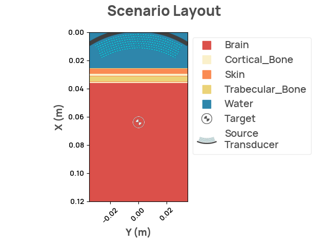
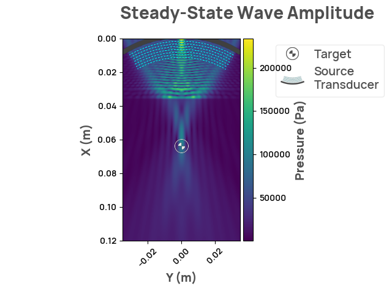

Note
Click here to download the full example code
Implementing a full scenario
Note
NDK and its examples are under constant development, more information and content will be added to this example soon!
The following code is a simplified implementation of NDK's Scenario 1.
Implementing a Scenario
import numpy as np
from neurotechdevkit import sources
from neurotechdevkit.grid import Grid
from neurotechdevkit.problem import Problem
from neurotechdevkit.results import SteadyStateResult2D
from neurotechdevkit.scenarios import Scenario2D, Target
Creating the scenario
scenario = Scenario2D()
scenario.center_frequency = 5e5 # Hz
scenario.target = Target(
target_id="target_1", center=[0.064, 0.0], radius=0.004, description=""
)
scenario.material_properties = {}
scenario.origin = [0.0, -0.035]
scenario.sources = [
sources.FocusedSource2D(
position=[0.0, 0.0],
direction=[1.0, 0.0],
aperture=0.064,
focal_length=0.064,
num_points=1000,
)
]
scenario.material_outline_upsample_factor = 8
Creating grid
grid = Grid.make_grid(
extent=(0.12, 0.07), # m
speed_water=1500,
center_frequency=scenario.center_frequency,
ppw=6,
)
scenario.grid = grid
Creating masks
def fill_mask(mask, start, end, dx):
# fill linearly along the x axis
if end is None:
n = int(start / dx)
mask[n:] = True
else:
n = int(start / dx)
m = int(end / dx)
mask[n:m] = True
def create_masks(grid):
# layers are defined by X position
dx = grid.space.spacing[0]
layers_m = np.array(
[
0.026, # water
0.004, # skin
0.0015, # cortical bone
0.004, # trabecular bone
0.001, # cortical bone
0.0835, # brain
]
)
layers = np.array(
["water", "skin", "cortical_bone", "trabecular_bone", "cortical_bone", "brain"]
)
interfaces = np.cumsum(layers_m)
mask_materials = {}
for material in np.unique(layers):
mask = np.zeros(grid.space.shape, dtype=bool)
for index in np.where(layers == material)[0]:
start = interfaces[index - 1] if material != "water" else 0
end = interfaces[index] if material != "brain" else None
fill_mask(mask, start=start, end=end, dx=dx)
mask_materials[material] = mask
return mask_materials
scenario.material_masks = create_masks(grid)
Rendering the layout

Creating problem
problem = Problem(grid=grid)
problem.add_material_fields(
materials=scenario.materials,
masks=scenario.material_masks,
)
scenario.problem = problem
Rendering the simulation
result = scenario.simulate_steady_state()
assert isinstance(result, SteadyStateResult2D)
result.render_steady_state_amplitudes(show_material_outlines=False)

Out:
Estimated time to complete simulation: 47 seconds. Memory required is 8.110059917325207 GB (available 73.624408064 GB). These values are approximated.
/home/circleci/.cache/pypoetry/virtualenvs/neurotechdevkit-3aSsmiER-py3.10/lib/python3.10/site-packages/devito/finite_differences/differentiable.py:224: DeprecationWarning: NotImplemented should not be used in a boolean context
return super(Differentiable, self).__eq__(other) and\
/home/circleci/.cache/pypoetry/virtualenvs/neurotechdevkit-3aSsmiER-py3.10/lib/python3.10/site-packages/devito/finite_differences/differentiable.py:224: DeprecationWarning: NotImplemented should not be used in a boolean context
return super(Differentiable, self).__eq__(other) and\
Total running time of the script: ( 0 minutes 25.369 seconds)
Download Python source code: plot_full_scenario.py